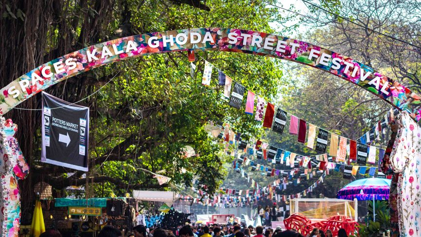

Goa Carnival
Date: February 11th-14th
Location:Goa
Description: Carnival in Goa, also called "Carnaval", "Intruz", "Entrado", or (colloquially) "Viva Carnival" refers to the festival of carnival, in the Indian state of Goa. Though significantly smaller than the well-known Rio Carnival or the Portuguese Carnival of Madeira, the Goa Carnival is the largest in India and one of the few traditional celebrations of the Western Christian holiday in Asia. The current version of the Goa Carnival was modelled after the Rio Carnival by a local musician named Timoteo Fernandes and imposed in 1965 to attract tourists. It has since turned into a major tourist attraction for the small state.
We have the best services available for you!

Amenities

Food Spots

Transports

Map
Hotels
Availabilities (per night)
The Palm Air Hotel(INR 2223 ) Palm Air.com Indie Stays Goa( INR 3046 ) Indie stays.com Grand Royale Palms ( INR 1593) Grand Royale.com
Foodspots
Bombil, Campal Price : Rs.800 per person Must try: Thali Address: Campal Bridge, opposite Military Hospital, Panaji. Café Bhonsle, Panjim Price: under Rs.200 per person Must try: Bhaji puri Address: House 26, Ward 12, Antao De Noronha Road, Near Cine National, Panaji Café Tato, Panjim Price: Rs.100 per person Must try: Bhaji puri Address: G3, Souza Towers, Dr RS Road, near Municipal Garden, Altinho.